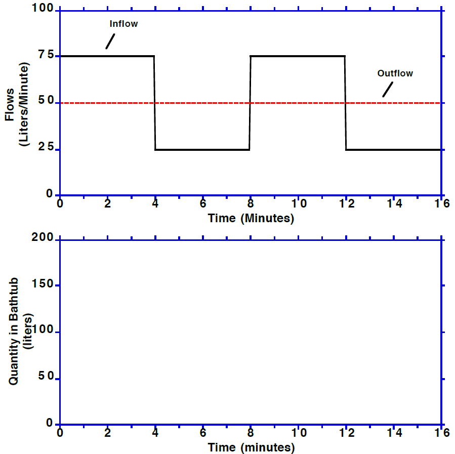
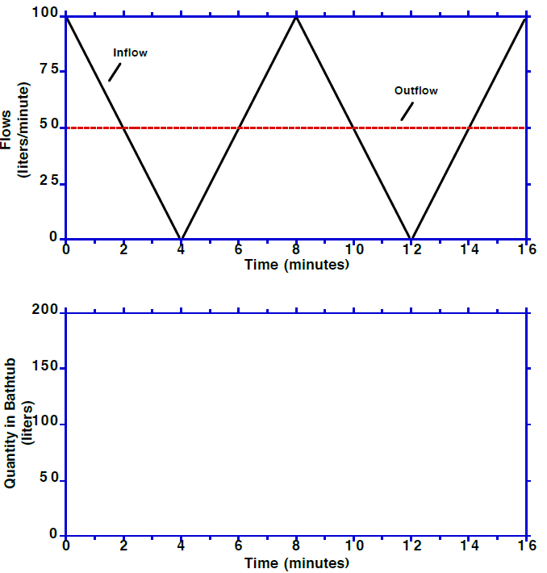
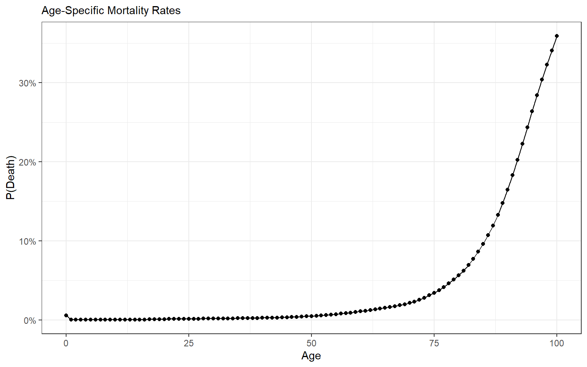
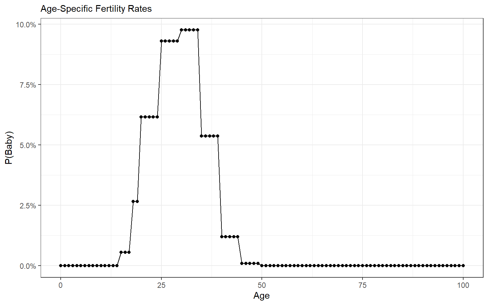
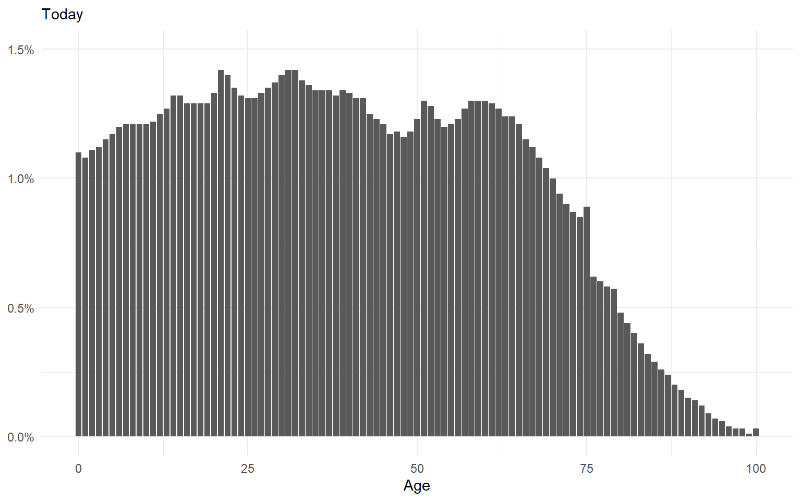
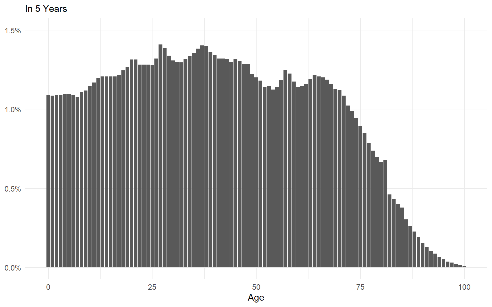

Stocks & Flows
POLS 3220: How to Predict the Future
Recap
So far this semester, we’ve covered:
Probability (Part I). How to handle uncertainty.
Wisdom of Crowds (Part II). The value of thinking from multiple perspectives.
Machine Learning (Part III). Using historical patterns to forecast future outcomes.
To date, we’ve mainly focused on short- and medium-term predictions.
- This was a practical choice. We needed forecasts we could score!
But many of the most important prediction problems have longer time horizons.
Here are a few trends I’ll be watching closely in the coming years:
Artificial Intelligence

Democracy
The National Debt
Partisan Polarization
Global Surface Temperature
Agenda
I want to give you some tools for reasoning about these sorts of long-term trends.
Today: thinking in terms of stocks & flows.
Stocks & Flows
A stock measures some quantity at a point in time.
A flow measures the rate of change in a quantity.
A useful metaphor is a bathtub.
Stocks & Flows
Lots of problems can be described in terms of stocks and flows:
| Stock | Inflow | Outflow |
|---|---|---|
| $ in my bank account | Monthly income | Monthly spending |
| National Debt | Taxes | Government Spending |
| Number of Democracies | Democratization | “Democratic Backsliding” |
| CO2 in Atmosphere | Carbon Emissions | Carbon Sinks |
| Population | Births | Deaths |
Too often, people confuse stocks and flows.
For example: debt is a stock, while deficit is a flow.
- “Cutting the deficit” does not necessarily mean that the national debt will decrease!
Exercise
Stocks and flows can be tricky! Sketch what you think will happen to the stock of water over time. Starts at 100 liters.


Markov Models
- When flows are defined in terms of probabilities, the model is called a Markov Chain.
- For example, suppose that every dictatorship has a 4% chance of democratizing each year.
- And every democracy has a 1% chance of becoming a dictatorship…
- If this process continued for 1,000 years, what do you think would happen to the share of countries that are democracies?
Markov Models
Answer: the number of democracies and dictatorships will eventually reach a stable point, called an equilibrium.
In equilibrium, inflows = outflows.
So in the example problem, there would need to be four times as many democracies as dictatorships to reach equilibrium.
Ergodic Theorem
When should we expect a system of stocks & flows to reach an equililbrium?
The ergodic theorem states that there will be a unique equilibrium for any system that meets the following conditions:
There exists a path from every stock to every other stock.
Flow probabilities are stationary (i.e. unchanging).
No matter how complicated the model gets, if these two conditions hold, there will be a unique equilibrium where all the inflows equal outflows.
Demographic Forecasts
The ergodic theorem can help us think about how population demographics are likely to change over time.
Here are the age-specific fertility and mortality rates for Americans, according to the CDC and SSA.


- Put it together and it’s a giant Markov model, where each age group is a stock.
Demographic Forecasts
If the current fertility and mortality rates remain stationary for a few decades, the age distribution will eventually settle into an equilibrium.


Demographic Forecasts
This has implications for:
the cost of social insurance programs
military recruitment
higher education
the national debt
interest rates
the “gerontocracy”
The Markov model lets us test out different scenarios (e.g. further reductions in fertility rates, medical advances that help Americans live longer) and forecast what would happen to the equilibrium.
Looking Forward
Next time, we’ll discuss positive and negative feedback.
- i.e. What happens when the size of a stock affects the rate of inflow/outflow?
Then we’ll wrap up the semester with lectures on tipping points and path dependence.